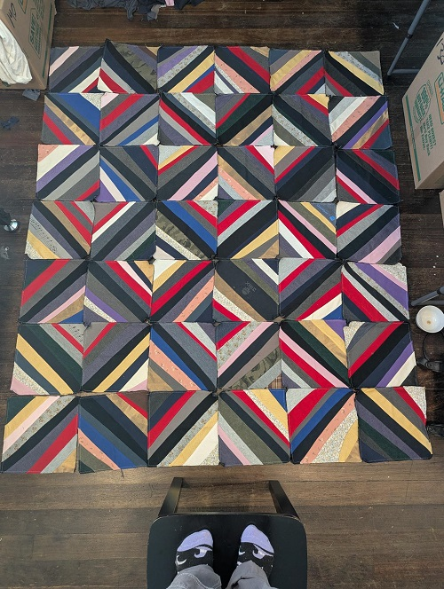

Tee Shirt Scraps Quilt
I stumbled on a few cool pictures of quilts made from the front design of graphic tee shirts and I immediately gathered up all of my old ones along with a bunch from my husband. While I'm working on a layout for that one I wanted to make something with all of the offcuts. There is a bunch of extra material from the back, sleeves, and area below the design so I figured I should be able to get 1 quilt out of it. After piecing the top to this one I've barely made a dent >.< so it looks like another tee shirt scrap quilt will be on the horizon!
Test layout
